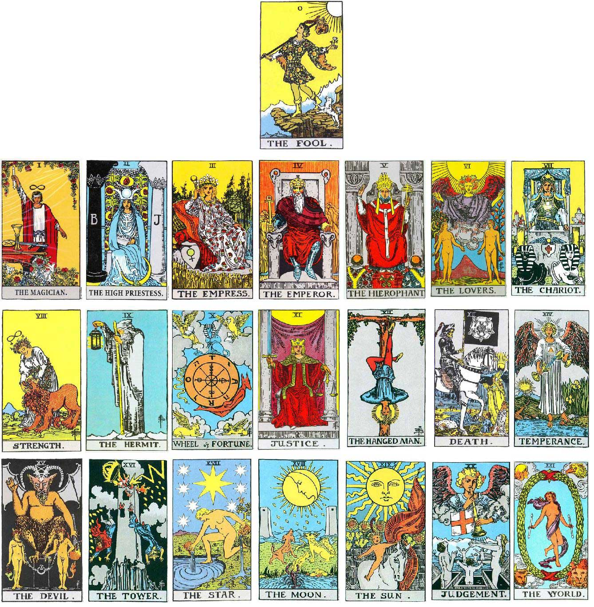

How To Read Tarot
Reading tarot is both an art and a personal journey. At its core, tarot is about interpreting the cards to gain insight into a question or situation. To begin, you'll need a tarot deck, which typically consists of 78 cards divided into two main categories: the Major Arcana and the Minor Arcana. The Major Arcana represents key life themes and lessons, while the Minor Arcana focuses on everyday situations and emotions. During a reading, you shuffle the cards, think about a question or topic, and then pull a specific number of cards from the deck to form a spread. The placement and combination of cards provide the foundation for your interpretation.
Major Arcana
To get familiar with the deck, it helps to know all the cards. The 22 cards of the Major Arcana include:
- The Fool
- The Magician
- The High Priestess
- The Empress
- The Emperor
- The Hierophant
- The Lovers
- The Chariot
- Strength
- The Hermit
- Wheel of Fortune
- Justice
- The Hanged Man
- Death
- Temperance
- The Devil
- The Tower
- The Star
- The Moon
- The Sun
- Judgment
- The World
Minor Arcana
These cards carry powerful meanings that address major life events, choices, and spiritual lessons. The remaining 56 cards belong to the Minor Arcana, which is divided into four suits:
- Cups
- Swords
- Pentacles
- Wands
Each suit contains 14 cards, ranging from Ace to 10, followed by four Court Cards: Page, Knight, Queen, and King. These cards reflect day-to-day concerns, such as emotions, actions, decisions, and material matters. Together, the Major and Minor Arcana provide a well-rounded system for understanding both large and small influences in a reading.
Intuition and Reading
When you perform a reading, it’s important to trust your intuition. While each card has a traditional meaning, how the cards interact with one another and the question you're asking is key. You can start simple, with a one-card pull for daily guidance, or use a more complex spread like the Three-Card Spread or an even more complex spread like the Celtic Cross to gain deeper insight into a situation. Even moreso, depending on the tarot deck you own, there may be unique symbolism and meanings within the art of the cards. As well, there may be some unique spreads included in the booklet that comes with it. There’s no wrong way to start, and with practice, you'll develop a style and method that feels right for you.
For a detailed interpretation of each card, check out this link to a resource where you can explore the meaning of all 78 cards. This guide will help you understand the symbolism and messages behind each card, helping you deepen your tarot practice and refine your readings.